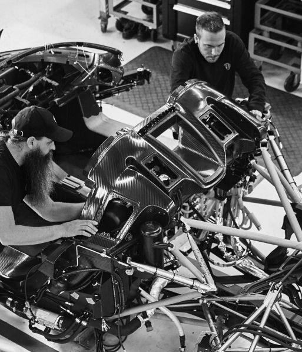
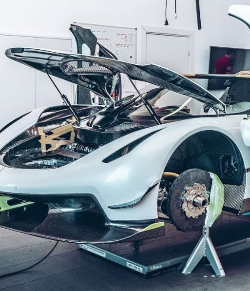

A Quarter Century Of Invention
Christian and Koenigsegg Automotive AB have introduced
and patented multiple new technologies over the years.
Among them are the ”rocket” catalytic converter, the
supercharger response system and a variable geometry
turbo system,
to name but a few. We've even developed
unique ways of using carbon fiber that make the car lighter,
stronger and safer.
The Koenigsegg philosophy
does not tolerate compromise.
Rather, we work with innovation in order to avoid
compromise completely. Nothing is impossible. This
open-mindedness and dedication are what define
Koenigsegg and its cars.
The Home Of Koenigsegg
Koenigsegg moved to its present location in Ängelholm,
Sweden, in 2003. The building had previously been home to
the
Swedish Air Force and once housed JAS 39 Gripen
fighter jets.
Now refurbished to suit Koenigsegg's requirements, these facilities provide
the perfect infrastructure for building high-tech Hypercars. There is ample room for the
composite workshop, engine development and testing, pre-
and final assembly,
paint shop, research and development
facilities, as well as vehicle and parts storage.
It is here, in this state-of-the-art facility in southern Sweden,
that Koenigsegg creates a handful of bespoke Hypercars
every year.

Spirit Of Performance
You may have seen the ghost that adorns the rear hood over the engine bay of every Koenigsegg,
or you may have seen
it on our clothing and jewelry.
But why a ghost?
The reason for this is that Koenigsegg's facility in
Ängelholm was previously an air force base,
and home to
one of Sweden's most legendary air force squadrons -
Johan Röd - the Ghost Squadron. The squadron would take
off early in the morning and fly until dusk.
People heard the
planes flying above the clouds but could never quite see
them, earning them their 'Ghost Squadron' moniker.
Koenigsegg inherited the Ghost Squadron's hangars and
runway
in the early 2000s. The pilots and crew were sad to
leave, but happy that a worthy operation took over their
fabled site. They offered Koenigsegg their coveted ghost,
and asked us to honor the squadron
by placing it on each
car built at their old facility, just as it appeared on their
fighter jets. As time has passed, Koenigsegg drivers, as well
as fans, have come to feel very much a part of the Ghost
Squadron itself. The Ghost Squadron symbol has never
shone brighter, and it is now known around the world as the
Spirit of Performance.